项目介绍
本项目旨在构建一个基于深度学习的工业异常检测系统，用于自动识别工业产品图像中的缺陷和异常。系统采用无监督学习方法，仅使用正常样本进行训练，能够检测出训练阶段未见过的各种缺陷类型。
项目目标
实现 PatchCore 和 PaDiM 两种 SOTA 异常检测算法
在 MVTec AD 数据集上进行训练和评估
提供完整的实验对比分析和可视化结果
输出可复现的实验报告和代码
应用场景
工业异常检测广泛应用于制造业质量控制，包括：电子产品缺陷检测（PCB板、芯片、连接器）、纺织品质量检测（布料、皮革）、食品包装检测（瓶盖、胶囊）、金属零件检测（螺丝、螺母）、木材和建材检测。
技术特点
无监督学习： 仅需正常样本训练，无需异常样本标注开集检测： 能够检测训练阶段未见过的缺陷类型像素级定位： 不仅判断图像是否异常，还能精确定位异常区域预训练模型： 利用 DINOv2/CLIP 等视觉基础模型提取特征
MVTec AD 数据集介绍
数据集背景
MVTec AD（MVTec Anomaly Detection Dataset） 是由德国 MVTec Software GmbH 公司发布的工业异常检测基准数据集。MVTec 是一家专注于机器视觉和图像处理技术的公司，在工业检测领域有着深厚的技术积累。
发布信息
发布时间： 2019年发布机构： MVTec Software GmbH（德国慕尼黑）论文： "MVTec AD - A Comprehensive Real-World Dataset for Unsupervised Anomaly Detection"发表会议： IEEE Conference on Computer Vision and Pattern Recognition (CVPR) 2019作者： Paul Bergmann, Michael Fauser, David Sattlegger, Carsten Steger许可证： CC BY-NC-SA 4.0（知识共享署名-非商业性使用-相同方式共享 4.0 国际许可）
数据集意义
MVTec AD 是工业异常检测领域最广泛使用的基准数据集之一，具有以下重要意义：
标准化基准： 为异常检测算法提供了统一的评估标准真实场景： 所有图像均来自真实工业场景，而非合成数据多样性： 涵盖 15 个不同的工业产品类别，覆盖多种材质和缺陷类型精细标注： 提供像素级的异常分割掩码，支持精确的异常定位评估广泛引用： 已被数百篇学术论文引用，成为该领域的标准数据集
数据集规模
15
产品类别
3,629
训练图像
1,725
测试图像
48
缺陷类型
数据集特点
高分辨率： 图像分辨率约为 1024×1024 像素真实缺陷： 所有异常样本均为真实工业缺陷，非人工合成多样缺陷： 包含划痕、裂纹、污染、变形、缺失等多种缺陷类型类别平衡： 每个类别包含 200-400 张训练图像和 50-150 张测试图像像素级标注： 每个异常样本都有对应的 ground truth 掩码
引用格式
Paul Bergmann, Michael Fauser, David Sattlegger, and Carsten Steger,
"A Comprehensive Real-World Dataset for Unsupervised Anomaly Detection",
IEEE Conference on Computer Vision and Pattern Recognition (CVPR), 2019
数据探索
数据集统计分析
总体统计
15
产品类别
3,629
训练图像
467
测试正常
1,258
测试异常
48
缺陷类型
图像属性
尺寸范围： 900×900 到 1024×1024 像素颜色模式： RGB（彩色图像）掩码模式： L（单通道灰度图）文件格式： PNG
各类别详细统计
类别
中文
训练集
测试正常
测试异常
GT掩码
缺陷类型数
bottle 瓶子 209 20 63 63 3 cable 电缆 224 58 92 92 8 capsule 胶囊 219 23 109 109 5 carpet 地毯 280 28 89 89 5 grid 格栅 264 21 57 57 5 hazelnut 榛子 391 40 70 70 4 leather 皮革 245 32 92 92 5 metal_nut 金属螺母 220 22 93 93 4 pill 药片 267 26 141 141 7 screw 螺丝 320 41 119 119 5 tile 瓷砖 230 33 84 84 5 toothbrush 牙刷 60 12 30 30 1 transistor 晶体管 213 60 40 40 4 wood 木材 247 19 60 60 5 zipper 拉链 240 32 119 119 7
关键发现
训练样本最多： hazelnut (391张)训练样本最少： toothbrush (60张)缺陷类型最多： cable (8种)缺陷类型最少： toothbrush (1种)异常样本最多： pill (141张)异常样本最少： toothbrush (30张)
可视化图表
1. 样本对比展示
展示正常样本与异常样本的对比，包括 Ground Truth 掩码和叠加效果
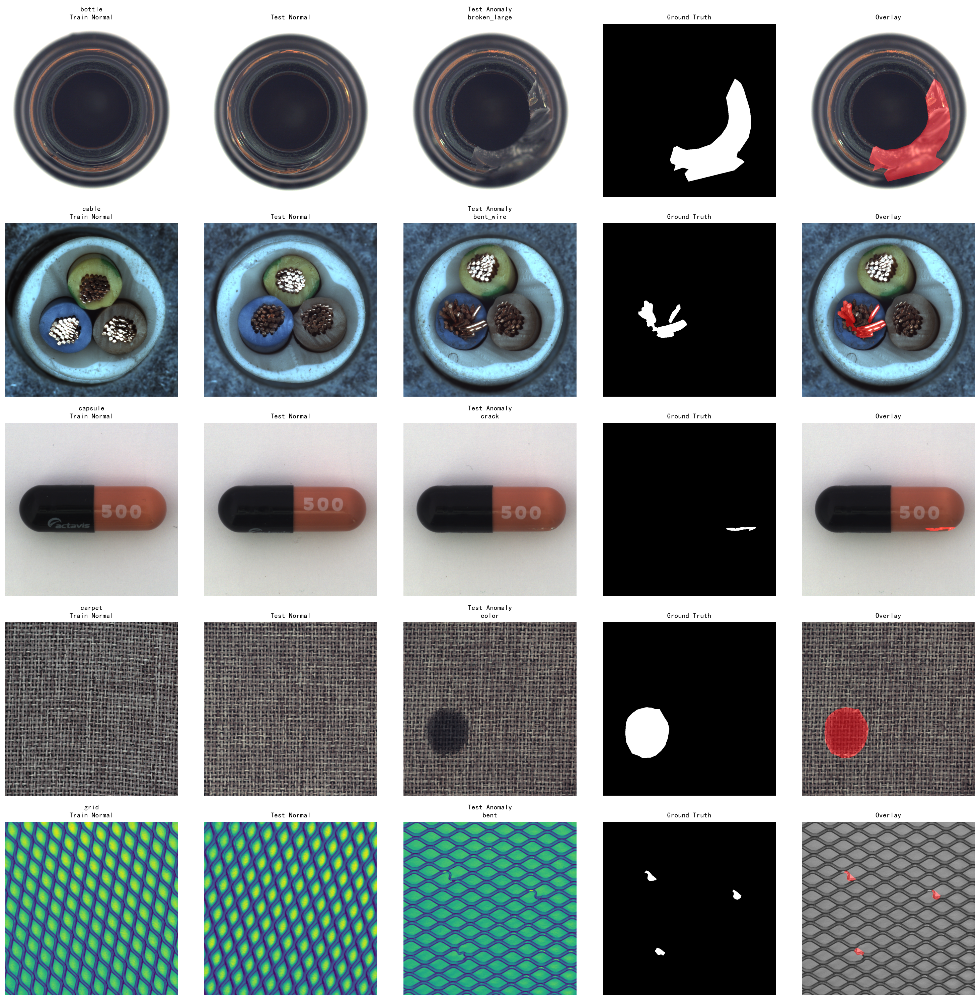
2. 图像尺寸分布
各类别图像的宽度和高度分布统计
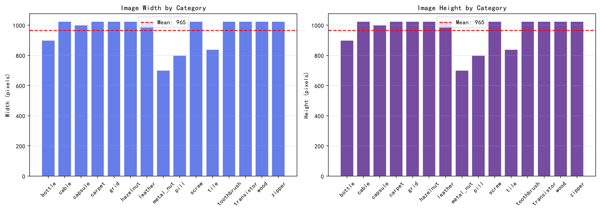
3. 颜色分布
RGB 三通道的像素值分布直方图
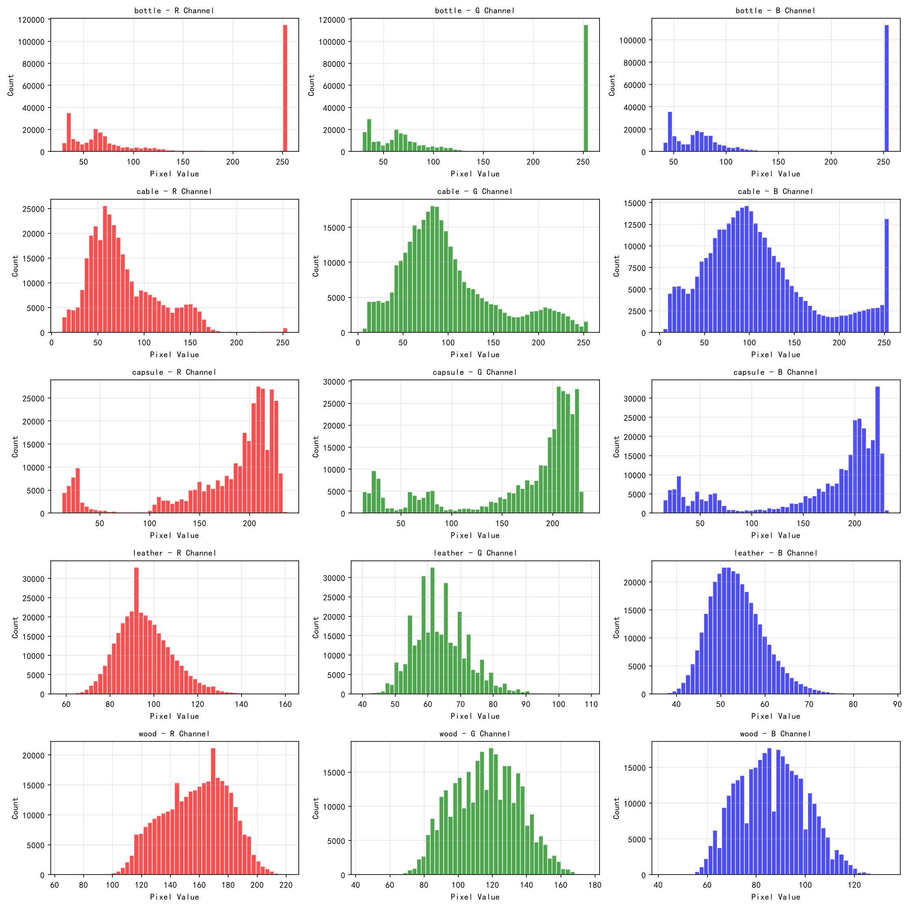
4. 缺陷类型分布
各类别缺陷类型数量的柱状图和饼图
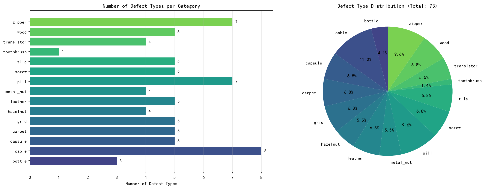
5. 训练/测试样本对比
训练集、测试正常集、测试异常集的样本数量对比
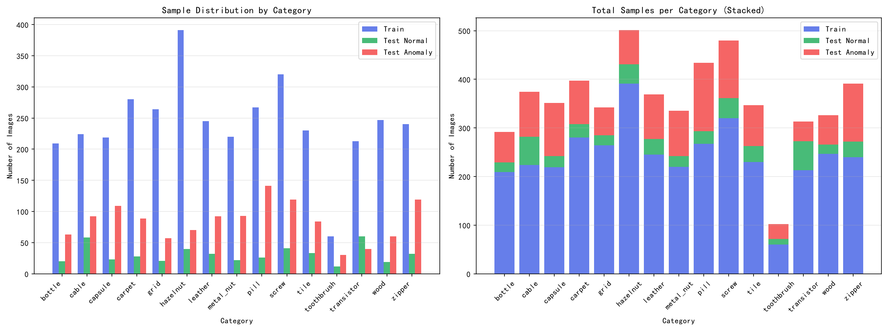
6. 亮度分布
正常图像与异常图像的亮度分布对比
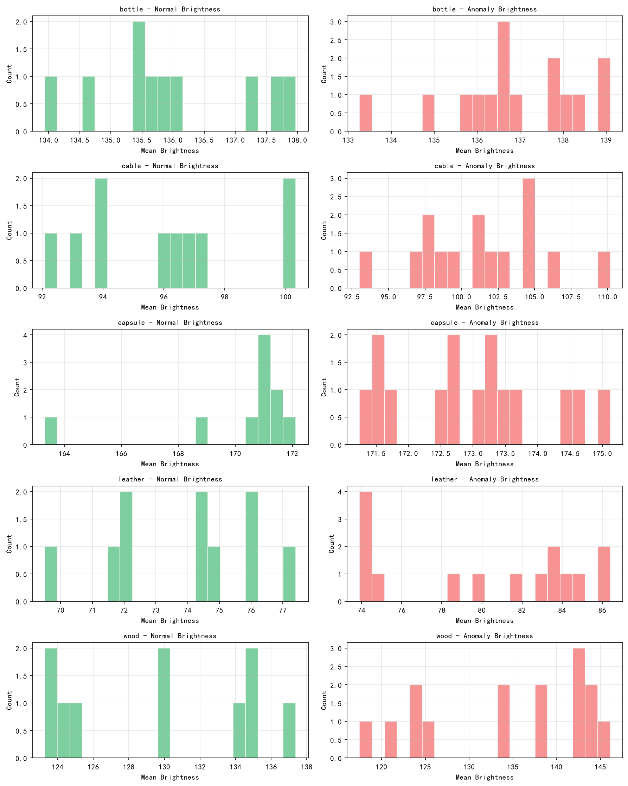
7. 异常样本展示
多类别多缺陷类型的异常样本展示
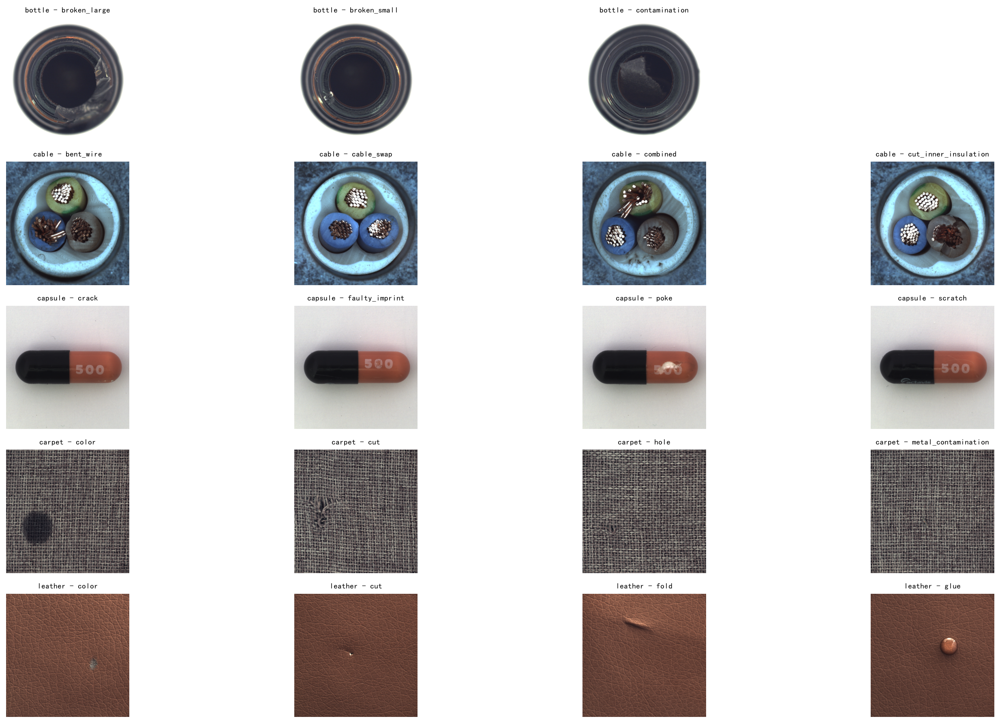
8. 数据集总览
数据集整体统计信息，包括样本总数、正常/异常比例、缺陷类型分布等
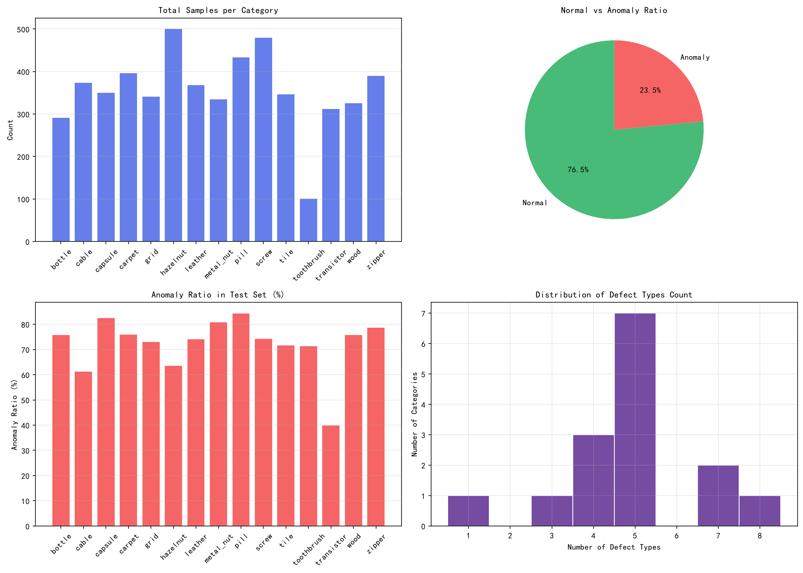
数据集结构
mvtec_anomaly_detection/
bottle/
cable/
capsule/
carpet/
grid/
hazelnut/
leather/
metal_nut/
pill/
screw/
tile/
toothbrush/
transistor/
wood/
zipper/
每个类别的目录结构
[category]/
train/good/ （正常样本，用于训练）
test/good/ （正常样本，用于测试）
test/[defect_type]/ （异常样本）
ground_truth/[defect_type]/ （像素级异常标注）
项目结构
目录结构
工业检测项目/
data/ （存放 MVTec AD 数据集，包含 15 个类别的训练和测试图像）
src/ （源代码目录，包含数据加载器、模型实现、评估指标等核心代码）
models/ （模型定义目录，包含 PatchCore、PaDiM 等算法实现）
scripts/ （可执行脚本：train.py 单类别实验、run_all.py 批量实验、analyze_results.py 结果分析、explore_dataset.py / visualize_dataset.py 数据探索）
notebooks/ （数据探索 notebook）
assets/ （静态资源：本地 MathJax，用于 HTML 文档公式渲染）
results/ （实验结果：各类别 metrics.json / scores.npz / 热力图，visualization/ 数据探索图表，analysis/ 对比图表与失败案例，summary.csv 汇总表）
reports/ （实验报告：experiment_report.md 完整报告，约 4500 字）
configs/ （配置文件目录，存放模型超参数、训练配置等 YAML 文件）
index.html （项目文档，包含项目介绍、数据说明、技术细节等）
requirements.txt （Python 依赖包列表，用于环境配置）
PROJECT_TASK.md （项目任务书，定义项目目标、技术要求和交付物）
数据目录结构
data/raw/mvtec_anomaly_detection/
[category]/ （如 bottle, cable 等）
train/good/ （正常样本，用于训练）
test/good/ （正常样本，用于测试）
test/[defect_type]/ （异常样本）
ground_truth/[defect_type]/ （像素级异常标注）
技术介绍
技术栈
层级
技术
职责
深度学习框架 PyTorch 2.0+ 动态计算图，支持灵活的模型构建和调试 预训练模型库 Timm （PyTorch Image Models）提供 700+ 预训练 CNN 模型，支持快速特征提取 特征提取骨干 Wide ResNet-50 （ImageNet 预训练）提取多尺度空间特征，用于异常检测 异常检测算法 PatchCore + PaDiM 无监督异常检测，仅用正常样本训练，检测未知缺陷 图像处理 OpenCV + PIL 图像读取、预处理、数据增强、掩码处理 可视化 Matplotlib + Seaborn 异常热力图、统计图表、数据集分析可视化 数值计算 NumPy + SciPy 矩阵运算、高斯分布建模、马氏距离计算 配置管理 PyYAML 模型超参数、训练配置等 YAML 文件管理 实验跟踪 JSON + CSV 实验结果记录、指标统计、可复现输出
评估指标
指标
全称
说明
Image AUROC Area Under ROC Curve（图像级） 衡量图像级异常分类的整体性能，值越接近 1 越好 Pixel AUROC Area Under ROC Curve（像素级） 衡量像素级异常定位的精度，评估每个像素的分类能力 AUPRO Average Per-Region Overlap 区域级重叠度，衡量异常区域的检测质量，对连通区域更敏感 F1-max Maximum F1 Score 最佳 F1 分数，在最优阈值下平衡精确率和召回率
系统架构与运行时服务
训练阶段为一次性流程，推理服务为常驻服务。下图展示了系统上线后的完整服务架构。
系统边界 · 工业异常检测平台
质检员
上传 · 查看
管理员
配置 · 监控
前端 Vue 3
检测面板 · SSE
热力图展示
FastAPI 服务
业务 API · JWT
任务调度
推理引擎
PatchCore / PaDiM
PyTorch + GPU
预训练模型
Wide ResNet-50
ImageNet 权重
SQLite
检测记录 · 日志
文件存储
图像 · 热力图
Timm / ImageNet
第三方 · 预训练权重
SSE · JWT
推理请求
读写
写入
加载
下载权重
算法原理
本项目实现两种基于预训练特征的无监督异常检测方法。两者的共同前提是：只用正常样本建模 ，测试时凡偏离"正常模式"的区域即判为异常。区别在于对"正常模式"的表示方式——PatchCore 用离散的记忆库，PaDiM 用连续的概率分布。
机器学习定位
这两个算法属于无监督学习 → 异常检测 分支（也称单类分类、开集异常检测），由多层机器学习技术组合而成：
层面 技术归属 在本项目中的体现
特征表示 监督学习 + 迁移学习 WRN-50-2 在 ImageNet（百万级标注图像）上监督训练；本项目冻结权重、仅复用其特征表示能力，不做微调 学习范式 无监督学习（单类分类） 训练集仅含正常样本；目标不是区分已知类别，而是「描述正常模式」——偏离即异常 建模方法 密度估计（经典统计机器学习） PatchCore 记忆库 ≈ 非参数密度估计（KNN 思想）；PaDiM 高斯分布 ≈ 参数化密度估计（马氏距离） 模型评估 机器学习评估方法论 AUROC（阈值无关）、AUPRO（区域级）、F1-max（最优阈值）
作用
无缺陷样本即可部署： 产线上异常样本稀少且类型不可预知，监督分类无法训练；这两类方法只需收集正常样本即可建模检测未知缺陷类型： 不依赖「见过什么缺陷」，对训练时从未出现过的缺陷类型同样有效（开集检测能力）输出定位信息： 不仅给出「是否异常」的图像级分数，还输出像素级热力图指出缺陷位置，可直接对接产线复检流程新产品快速迁移： 换产线、换产品时无需重新设计特征或调参，只需重新采集一批正常样本重新建模（分钟级）
典型应用
工业制造质检： PCB / 半导体表面检测、金属零件划痕凹坑、纺织布料瑕疵、玻璃与透明件检测、电子元器件组装——MVTec AD 数据集正来自这些真实场景（覆盖瓶、电缆、胶囊、地毯、金属螺母、螺丝、晶体管等 15 类产品）医疗影像： 病灶与异常区域的筛查研究——同样是「正常样本易得、异常样本稀缺」的场景，方法可直接迁移其他场景： 视频监控异常行为、遥感影像变化检测等「异常稀少且类型未知」的检测任务
为什么整个过程没有梯度下降？
这两个方法常被概括为「pretrained feature + classical statistical modeling 」：用深度学习特征替代手工设计特征，再套用经典统计方法。代码中的 fit 过程实际是统计估计 （存储代表性特征，或估计均值与协方差），不存在反向传播与权重更新——这与任务书中的可选算法 STFPM / FastFlow（需要真正梯度训练学生网络或归一化流）形成鲜明对比。
PatchCore 算法
论文： Towards Total Recall in Industrial Anomaly Detection（CVPR 2022）核心思想： 把全部正常样本的 patch 特征压缩成一个"记忆库"，测试 patch 到记忆库的最近邻距离就是它的异常分数——离正常特征越远，越可能是缺陷。
算法流程
多尺度特征提取： 用 WRN-50-2 提取 layer2（512 维）与 layer3（1024 维）特征，上采样对齐后拼接为 1536 维——中层特征兼顾语义信息与空间细节局部邻域聚合： 对拼接特征做 3×3 平均池化，把邻域上下文融入每个 patch，提升对局部形变的鲁棒性核心集采样（Coreset）： 全部 patch 特征可达数十万条，直接全部保留会导致检索过慢。用贪心 k-center 策略选出最具代表性的 10%：每次选择"离已选集合最远"的样本，保证对整个正常特征空间的覆盖；距离计算先在 128 维随机投影空间进行以加速异常打分： 测试 patch 在记忆库中检索 K=9 个最近邻，以最近邻距离为基础，并用近邻密度重加权：
$$s(f) = \left( 1 - \frac{e^{d(m^*, f)}}{\sum_{i} e^{d(m_i, f)}} \right) \cdot d(m^*, f)$$
其中 d(m*, f) 为最近邻距离。直观理解：若 K 个近邻距离彼此接近（说明记忆库中该处特征密集、正常样本本就多样），则降低该分数的置信度；若存在一个明显更近的邻居，则保持高分。异常图与图像级分数： patch 分数双线性上采样到输入尺寸，再做高斯平滑，得到平滑的异常热力图；图像级分数取热力图的最大值（一张图只要有一处明显异常，就判为异常）
PaDiM 算法
论文： PaDiM: a Patch Distribution Modeling Framework for Anomaly Detection and Localization（ICPR 2021）核心思想： 对每个 patch 位置单独建立一个多元高斯分布来刻画"该位置的正常特征长什么样"，测试时用马氏距离衡量实际特征偏离这个分布的程度。
算法流程
多尺度特征提取： 用 WRN-50-2 提取 layer1（256 维）+ layer2（512 维）+ layer3（1024 维）特征，上采样对齐后拼接为 1792 维——低层保留纹理细节，高层携带语义信息随机降维： 从 1792 维中随机选择 d 个维度。论文在 WRN50 上取 d=550，本项目受 CPU 内存限制取 d=100（3,136 个位置 × 100×100 协方差矩阵已是 CPU 可承受的上限）高斯分布建模： 对每个 patch 位置 (i,j)，用全部正常样本估计均值 μij 和协方差 Σij （协方差加 εI 正则化保证可逆，ε=0.01）。协方差矩阵记录了特征各维度间的相关性，这是相比"逐维方差"更精确的关键异常打分： 测试 patch xij 的马氏距离即异常分数：
$$d(x_{ij}) = \sqrt{\, (x_{ij} - \mu_{ij})^{\top} \, \Sigma_{ij}^{-1} \, (x_{ij} - \mu_{ij}) \,}$$
马氏距离等价于"按正常样本的分布形状归一化后的距离"——在高方差方向上的偏离会被弱化，在低方差方向上的偏离会被放大。异常图与图像级分数： 马氏距离矩阵上采样 + 高斯平滑得到热力图，图像级分数同样取最大值
两种算法对比
维度 PatchCore PaDiM
正常模式的表示 离散特征记忆库（4,000 个代表性 patch） 连续概率分布（3,136 个高斯分布） 异常度量 KNN 最近邻距离 + 近邻密度重加权 马氏距离（利用特征相关性） 特征层 layer2 + layer3（中层语义） layer1 ~ layer3（全尺度细节） 误差来源 核心集采样的覆盖度 降维带来的信息损失 优势场景 结构复杂、缺陷细微（如电缆） 训练快、存储紧凑、简单缺陷
评估标准
评估遵循 MVTec AD 论文的标准协议。整体设计围绕三个核心问题：「有没有异常」（判别粒度）、「阈值怎么定」（阈值依赖）、「对小缺陷和低误报是否公平」（类别不平衡与误报容忍） 。四个指标的具体定义如下。
1. Image AUROC（图像级 · 阈值无关）
把每张测试图作为一个样本，用图像级异常分数做二分类，计算 ROC 曲线下面积：
$$\mathrm{AUROC} = \int_{0}^{1} \mathrm{TPR} \, d(\mathrm{FPR})$$
TPR = TP / (TP + FN)：异常图被正确识别的比例（召回率；TP 为异常图判对，FN 为漏检）FPR = FP / (FP + TN)：正常图被误判为异常的比例（误报率）等价理解：随机取一张异常图和一张正常图，异常图分数更高的概率——0.5 相当于随机猜测，1.0 为完美排序
阈值无关 ：衡量异常分数的排序能力，不需要预设判定阈值
2. Pixel AUROC（像素级 · 阈值无关）
把异常图的每个像素作为一个样本，与 Ground Truth 掩码逐像素比较，汇总所有测试图的像素后计算——公式与 Image AUROC 完全相同，只是统计单元从「图」变为「像素」 ：
衡量热力图能否准确指出缺陷所在的像素位置
注意大缺陷偏置 ：按像素统计时，大缺陷贡献的像素多、权重高，小而关键的缺陷漏检容易被掩盖（由 AUPRO 补正）
3. AUPRO（区域级 · 阈值无关）
先对每个缺陷连通域计算重叠率，再对所有区域取平均，最后在低误报区间上积分：
$$\begin{aligned}
O_R(t) &= \frac{|\{\, p \in R : s(p) \geq t \,\}|}{|R|} \\
\mathrm{PRO}(t) &= \frac{1}{N} \sum_{R} O_R(t) \\
\mathrm{AUPRO} &= \frac{1}{0.3} \int_{0}^{0.3} \mathrm{PRO} \, d(\mathrm{FPR})
\end{aligned}$$
OR (t) ：阈值 t 下，缺陷连通域 R 中被检出的像素比例（Per-Region Overlap）PRO ：所有缺陷区域重叠率的平均——每个区域权重相同，与缺陷大小无关FPR ≤ 0.3 ：工业场景对误报容忍度低，评估聚焦低误报区间；积分后按区间长度归一化
4. F1-max（图像级 · 最优阈值）
遍历所有判定阈值，取精确率与召回率调和平均的最大值：
$$\begin{aligned}
P &= \frac{TP}{TP + FP}, \qquad R = \frac{TP}{TP + FN} \\
F_1 &= \frac{2PR}{P + R}, \qquad F_1\text{-max} = \max_{t} F_1(t)
\end{aligned}$$
P（精确率） ：判为异常的图中真正异常的比例——误报越少越高R（召回率） ：异常图中被检出的比例——漏检越少越高回答的问题是「部署到产线后，最优阈值下能达到什么实际判别水平」——与 AUROC 的排序能力评估互补
指标参考区间（优良判断）
各指标的「优良」参考区间如下（综合 MVTec AD 论文水平与工业实践经验）：
指标 优秀 良好 可用 偏弱
Image AUROC ≥ 99% 97 ~ 99% 95 ~ 97% < 95% Pixel AUROC ≥ 98% 96 ~ 98% 93 ~ 96% < 93% AUPRO ≥ 95% 90 ~ 95% 85 ~ 90% < 85% F1-max ≥ 98% 95 ~ 98% 90 ~ 95% < 90%
参照系：数值意味着什么
参照点 Image AUROC 说明
随机猜测 50% 完全无判别能力 传统方法（自编码器等） 85 ~ 95% 早期基线水平 PaDiM（论文） 约 97.5% 2021 年 SOTA PatchCore（论文） 约 99.6% 2022 年 SOTA
注：AUPRO 数值受实现口径影响（FPR 上界、平滑参数等），优良判断应以同一实现下的横向对比为主，论文数值仅作量级参考。
优良判断原则
看优先级： 先看 Image AUROC（能否用）→ 再看 AUPRO（定位是否可信）→ 最后 F1-max（部署工作点）看最弱类别： 均值再高，单个类别偏低就是产线上的漏洞（如 PaDiM 的 cable 仅 86.06%）看场景要求： 产线若要求漏检率低于 0.1%，则召回须 ≥ 99.9%，此时「95% 良好」也可能不达标——业务指标优先于学术指标横向对比优先： 同一数据集、同一实现口径下比较，比绝对数值更有参考意义
经验法则（图像级）
90% 是「能用」线 → 95% 是「好用」线 → 99% 是「顶尖」线。
评估设计的考虑维度
考虑维度 为什么这样考虑 对应设计
判别粒度 产线既需要「发现异常图」，也需要「指出缺陷位置」 图像级：Image AUROC、F1-max；像素 / 区域级：Pixel AUROC、AUPRO 阈值依赖 分数排序能力与实际部署决策能力是两回事 阈值无关：AUROC 类指标；最优阈值：F1-max 类别不平衡 异常像素占比通常不足 1%，准确率等指标会严重失真 AUROC 对类别不平衡不敏感；F1 聚焦正类（异常） 缺陷尺寸公平 不能让大缺陷的像素权重掩盖小缺陷的漏检 AUPRO 按缺陷连通域平均，区域权重相同 误报容忍度 工业场景误报成本高，需评估低误报区间的表现 AUPRO 限定在 FPR ≤ 0.3 区间积分
为什么需要 AUPRO？
Pixel AUROC 按像素统计，大缺陷贡献的像素多、权重高，小缺陷的漏检容易被掩盖。而工业检测中「每个缺陷都重要」，不论大小。AUPRO 先按缺陷连通域计算重叠率、再对所有区域取平均，使每个缺陷区域权重相同，能更公平地反映区域级检出质量。
数据建模
本项目实现了两种主流的无监督异常检测方法（PatchCore 与 PaDiM），两者共享同一套流程：仅用正常样本完成「建模」，再对测试样本进行异常打分与定位。本模块介绍建模流程、环境配置与实现要点；实验结果、模型对比与最终结论见「实验结果」模块 。
建模流程
→
→
→
→
评估与可视化
AUROC · AUPRO · 热力图
环境与骨干网络
运行环境： Python 3.12 + PyTorch 2.14（CPU 版，无 GPU）骨干网络： torchvision 官方 Wide ResNet-50-2（ImageNet-1K 预训练权重），与两篇论文的官方实现一致预处理： 统一缩放至 224×224，ImageNet 均值/标准差归一化；不做数据增强 ——记忆库/分布建模需忠实反映真实正常样本的分布训练方式： 无监督，仅使用 train/good 正常样本；测试时对正常 + 各类缺陷样本打分
关键实现要点
模块 实现要点
PatchCore layer2+layer3 特征拼接（1536 维）→ 3×3 局部邻域聚合 → 随机投影（128 维）+ 贪心核心集采样压缩记忆库 → KNN 最近邻距离 + 近邻密度重加权 PaDiM layer1+layer2+layer3 特征拼接（1792 维）→ 随机降维至 100 维（CPU 适配，论文为 550）→ 每个 patch 位置估计完整协方差高斯分布（含 ε 正则化）→ 马氏距离 评估指标 Image AUROC、Pixel AUROC、AUPRO（逐缺陷连通域重叠率积分，FPR ≤ 0.3）、F1-max
实验配置
参数 PatchCore PaDiM
特征层 layer2 + layer3 layer1 + layer2 + layer3 特征维度 1536 1792 → 100（随机降维） 核心超参数 coreset_ratio = 0.1，K = 9 eps = 0.01 记忆库 / 分布规模 4,000 个 patch 特征 3,136 个高斯分布 输入尺寸 224 × 224 实验类别（5 类） bottle / cable / carpet / hazelnut / transistor
复现方式
单类别训练：py scripts/train.py --model patchcore --category bottle
批量实验：py scripts/run_all.py
结果输出：results/<model>/<category>/（metrics.json · scores.npz · visualizations/）
汇总文件：results/summary.csv · results/summary.md
实验结果
在 5 个类别（bottle / cable / carpet / hazelnut / transistor）上对 PatchCore 与 PaDiM 进行了完整评估，评估指标为 Image AUROC、Pixel AUROC、AUPRO 与 F1-max。
总体结果（5 类别平均）
括号内为对照「算法原理 → 评估标准」参考区间给出的评级。
模型 Image AUROC Pixel AUROC AUPRO F1-max 平均建模耗时 综合
PatchCore 99.76% （优秀）98.45% （优秀）97.78% （优秀）98.89% （优秀）131 s 全线优秀 PaDiM 95.20%（可用） 97.39%（良好） 94.11%（良好） 92.88%（可用） 47 s 良好（受 cable 拖累）
指标速览
Image AUROC —— 图像级判别能力：有缺陷的图是否被排在正常图之前（能否「拦住异常品」，最重要的指标）Pixel AUROC —— 像素级定位精度：异常热力图与缺陷掩码在像素层面的吻合程度AUPRO —— 区域级检出完整度：每个缺陷连通域被整体找出的比例（限定在低误报区间 FPR ≤ 0.3）F1-max —— 最优阈值下的判别水平：部署产线时可实现的精确率与召回率平衡平均建模耗时 —— 单类别从特征提取到记忆库 / 分布估计完成的平均时间
指标定义、公式与优良参考区间详见「算法原理 → 评估标准」。
各类别明细
模型 类别 Image AUROC Pixel AUROC AUPRO F1-max
PatchCore bottle 1.0000 0.9853 0.9982 1.0000 PatchCore cable 0.9912 0.9856 0.9826 0.9681 PatchCore carpet 0.9976 0.9900 0.9894 0.9888 PatchCore hazelnut 1.0000 0.9869 0.9328 1.0000 PatchCore transistor 0.9992 0.9744 0.9857 0.9877 PaDiM bottle 1.0000 0.9832 0.9959 1.0000 PaDiM cable 0.8606 0.9522 0.8987 0.8286 PaDiM carpet 0.9952 0.9830 0.9766 0.9944 PaDiM hazelnut 0.9550 0.9761 0.8680 0.9504 PaDiM transistor 0.9492 0.9749 0.9664 0.8706
模型对比
对比维度 PatchCore PaDiM 对比结论
Image AUROC（平均） 0.9976 0.9520 PatchCore 领先 4.6 个百分点 Pixel AUROC（平均） 0.9845 0.9739 差距仅 1.1 个百分点，定位能力接近 AUPRO（平均） 0.9778 0.9411 PatchCore 对缺陷区域的检出更完整 F1-max（平均） 0.9889 0.9288 PatchCore 判别的精确率/召回率更均衡 最弱类别 cable（0.9912） cable（0.8606） 细线缆结构对两者均为难点，PaDiM 受影响更大 最强类别 bottle / hazelnut（1.0000） bottle（1.0000） 简单类别两者均接近完美 建模耗时 131 s 47 s PaDiM 快约 3 倍，属于速度换精度的权衡
结果可视化
1. 指标对比
两模型四项指标平均对比
PatchCore 在四项指标上全面领先，其中 Image AUROC 领先 4.6 个百分点
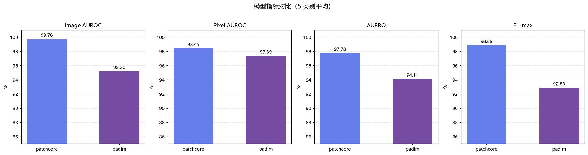
各类别 Image AUROC 对比
cable 类别是两模型的共同难点，PaDiM 在此类别上退化明显（86.06%）
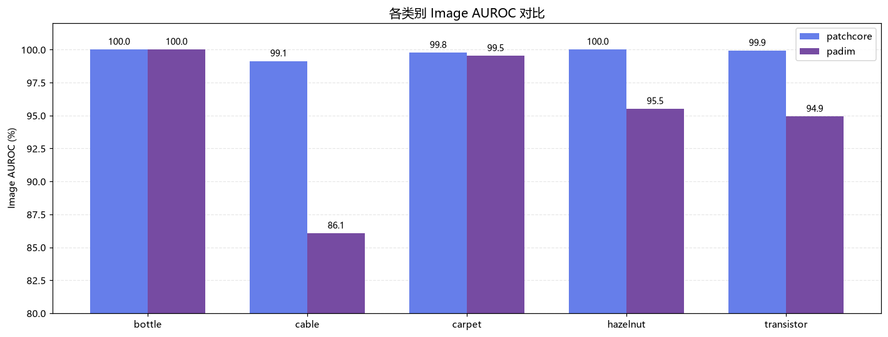
2. 检测结果（热力图）
异常热力图展示模型对缺陷的定位能力（红色为高异常区域，第 3 列为 Ground Truth 掩码）：
PatchCore · bottle（污染缺陷）
异常热力图精准定位瓶口污染区域，与 Ground Truth 高度吻合
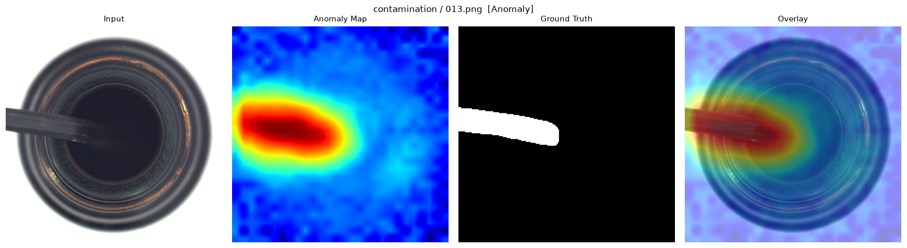
PatchCore · cable（组合缺陷）
正确检出电缆组件的破损/缺失区域
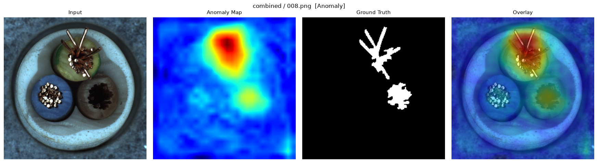
PatchCore · carpet（纹理缺陷）
纹理表面的缺陷定位
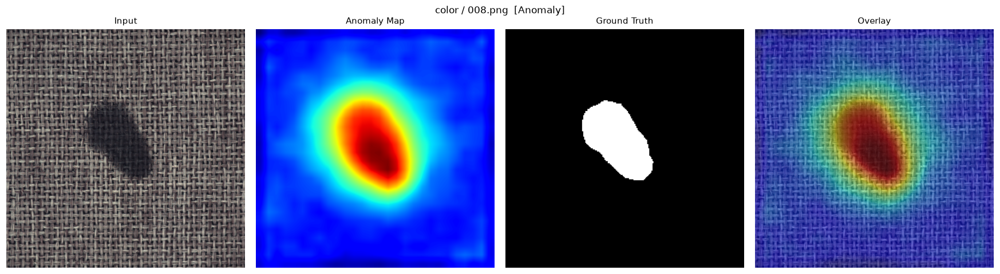
PaDiM · cable（弱项）
细线缆结构上存在漏检——Ground Truth 中的多处缺陷未被热力图完全覆盖
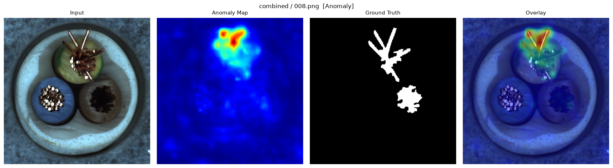
3. 失败案例分析
按 F1 最优阈值对全部测试样本判定，统计误检（正常图判为异常）与漏检（异常图未检出）：
模型 误检（正常判异常） 误检率 漏检（异常未检出） 漏检率
PatchCore 7 / 206 3.4% 7 / 354 2.0% PaDiM 44 / 206 21.4% 16 / 354 4.5%
关键发现
PaDiM 的主要问题不是「找不到缺陷」，而是「误报太多」——误检率达 21.4%，是 PatchCore 的约 6 倍。这与其 Pixel AUROC 尚可（0.9739）但 Image AUROC 偏低（0.9520）的现象一致：像素级定位能力尚可，但图像级判别被大量误报拖累。
PatchCore 失败案例
上排：误检案例（正常图被误判）｜下排：漏检案例（缺陷未检出，白线为缺陷真值边界）
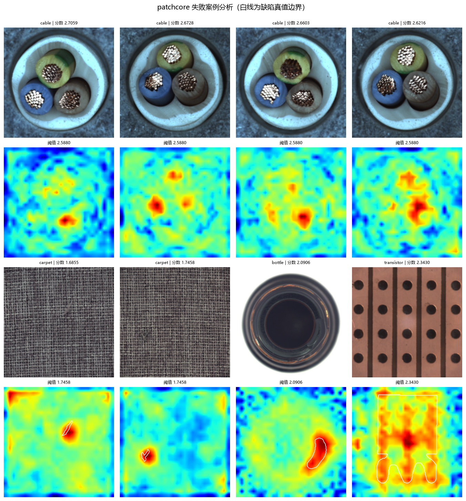
PaDiM 失败案例
误检集中在 hazelnut / transistor（热力图高亮多出现在图像边缘与背景）；漏检集中在 carpet / cable（缺陷位置无响应）
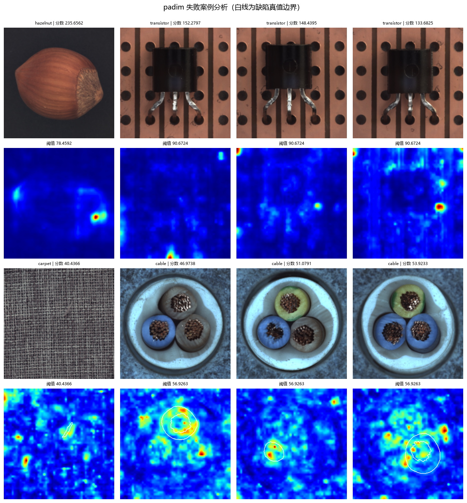
失败模式归纳：
误检模式 ：热力图高亮出现在图像边缘、背景或物体轮廓处——这些区域的特征方差估计不稳定，正常波动被放大为高马氏距离漏检模式 ：carpet 的纹理级细微变化与正常纹理统计差异小，现有特征分辨能力不足共同难点 ：hazelnut 的 AUPRO（PatchCore 0.9328 / PaDiM 0.8680）明显低于其 Image AUROC——异常图能检出，但缺陷区域定位不完整，与榛子表面缺陷边界模糊、GT 标注主观性有关
最终结论
综合性能： PatchCore 在全部四项指标上领先，5 类平均 Image AUROC 达 99.76%，与论文报告水平（约 99.6%）一致，推荐作为首选方案PaDiM 的短板： 结构复杂的 cable 类别上 Image AUROC 仅 86.06%；主要原因是 CPU 适配将特征维度从论文的 550 维降至 100 维，削弱了协方差对复杂结构的建模能力，恢复维度预计可显著提升定位与判别的差异： 两者 Pixel AUROC 接近（98.45% vs 97.39%），PaDiM 的像素级定位尚可，主要差距集中在图像级判别速度与精度的权衡： PaDiM 建模速度约为 PatchCore 的 3 倍，适合对训练时间敏感、缺陷结构简单的场景；PatchCore 适合追求极致精度的场景共性规律： bottle 等对比度高的类别两者均接近完美；cable 等细结构类别是共同难点
后续工作
扩展实验类别（当前 5 类 → 全部 15 类）
恢复 PaDiM 论文配置（特征维度 100 → 550），改善 cable 类别表现
降低 PaDiM 误检率（增强正则化 / 图像级分数改用分位数统计）
可选：STFPM / FastFlow 对比实现
完整实验报告见 reports/experiment_report.md（约 4500 字，含 12 张图表与 7 篇参考文献）。